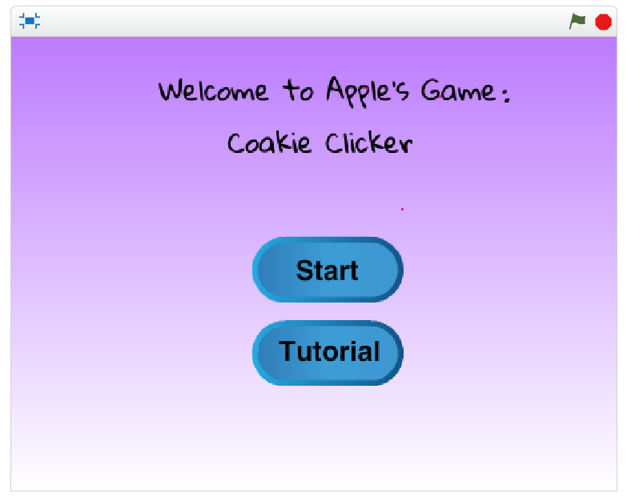
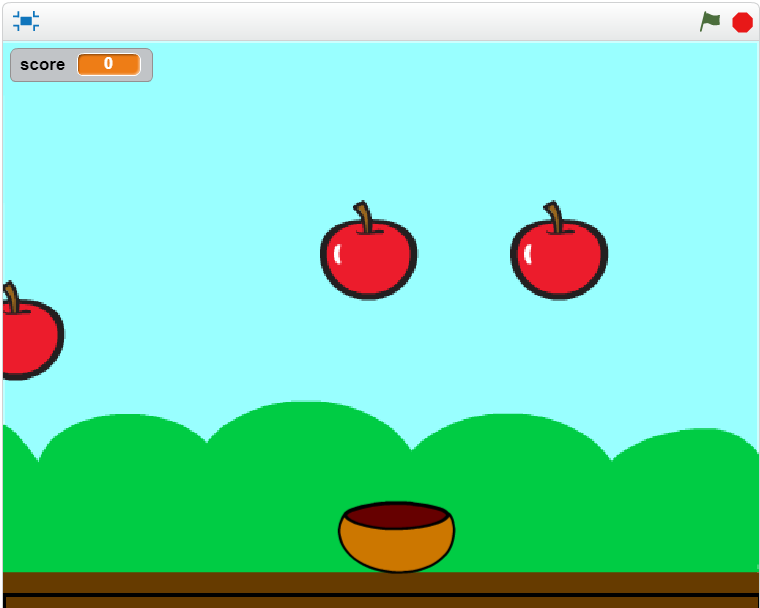
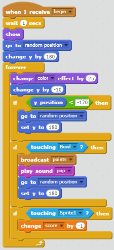

My Game: Coakie Clicker

Link To The Game
Description of game
Our game is about trying to catch the apples using the bowl. You can move your
bowl by using the arrow keys. Later on the game, as you get a higher
score an elephant and a penguin will drop down. You can not catch the
animals because it will decrease your score. As you collect the apples,
your score will increase by 5 points. The use of randomness occurs
when the apples, elephant, and penguin spawns at different places on top
of the screen. The games increases in difficulty when you get a score
higher than 100 and the elephants start dropping down quickly. If you
catch the elephant, it decreases your score by 5. Later, the penguin
will drop down. If you catch a penguin, you will lose instantly.
To win, you would have to get a score of 200.
Reflection
My partner and I created this game because of another game called
Flappy Mario on scratch. Two successful points in the development
process of our game was how we got the sprites or characters to fall down.
Another successful process was how we got to make the bowl move and
catch the sprites. Two obstacles in the development was the point system
and how the sprites kept on glitching on top of the screen. We overcame
this obstacle by asking the teacher for help, which was very helpful.
If we had more time on our game project, we would have made a pause button.

This is an algorithm that we used to make the bowl move. This algorithm
makes the apple spawn at different places at the top of the screen.
Choose Your Own Adventure
My Adventure Story On Python
In my story, it basically talks about how there is a monster who is
holding captive to a man's, Cook, daughter. So the adventure begins
by you choosing to help your daughter or leave her. Also, make sure
you press run.
My partner and I did not have any incremental development, but we did
have a interative development. One interative development was when
the computer asks you to choose a letter such as a or b, you would have
to choose those letters or the computer would not let you continue the story.
The difficulties my partner and I had was that we could not sometimes figure
out how to make the story flow better. To fix this, we looked at our
teacher's program for refrence. I believe that organizing your program
into functions is a form of procedural abstraction because it makes
the program easier to read.
There was a story that I had read in class
that I enjoyed. I do not recall the name, but I enjoyed it because
if you chose the wrong path, you would have to restart.